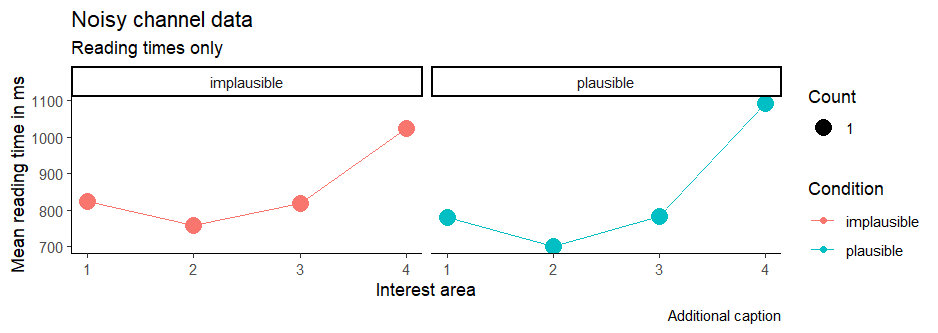
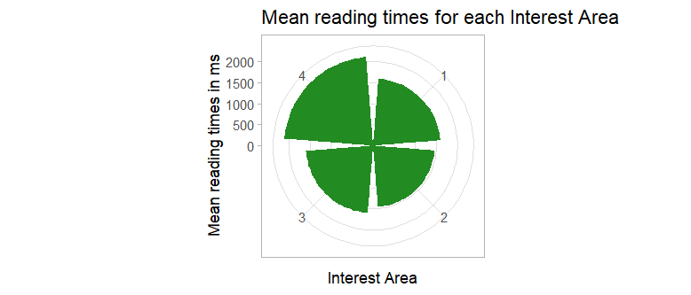

Report - Assignment 7
Session Info
R version 4.3.3 (2024-02-29 ucrt)
Platform: x86_64-w64-mingw32/x64 (64-bit)
Running under: Windows 11 x64 (build 22631)
Matrix products: default
locale:
[1] LC_COLLATE=Portuguese_Brazil.utf8 LC_CTYPE=Portuguese_Brazil.utf8
[3] LC_MONETARY=Portuguese_Brazil.utf8 LC_NUMERIC=C
[5] LC_TIME=Portuguese_Brazil.utf8
time zone: Europe/Berlin
tzcode source: internal
attached base packages:
[1] stats graphics grDevices utils datasets methods base
other attached packages:
[1] lubridate_1.9.3 forcats_1.0.0 stringr_1.5.1 dplyr_1.1.4
[5] purrr_1.0.2 readr_2.1.5 tidyr_1.3.1 tibble_3.2.1
[9] ggplot2_3.5.1 tidyverse_2.0.0
loaded via a namespace (and not attached):
[1] bit_4.0.5 gtable_0.3.4 compiler_4.3.3 crayon_1.5.2
[5] tidyselect_1.2.1 parallel_4.3.3 scales_1.3.0 R6_2.5.1
[9] generics_0.1.3 munsell_0.5.1 pillar_1.9.0 tzdb_0.4.0
[13] rlang_1.1.3 utf8_1.2.4 stringi_1.8.3 bit64_4.0.5
[17] timechange_0.3.0 cli_3.6.2 withr_3.0.0 magrittr_2.0.3
[21] grid_4.3.3 vroom_1.6.5 rstudioapi_0.16.0 hms_1.1.3
[25] lifecycle_1.0.4 vctrs_0.6.5 glue_1.7.0 fansi_1.0.6
[29] colorspace_2.1-0 tools_4.3.3 pkgconfig_2.0.3 Moses Illusion Experiment Data Report
#Table of Contents
| List of plots |
|---|
| Figure 1 |
| Figure 2 |
1. Load required libraries
library(tidyverse)2. Load required data sets from the working directory and assign variables for each.
moses <- read_csv("moses_clean.csv")
questions <- read_csv("question.csv")
noisy_aj <- read.csv("noisy_aj.csv")
noisy_rt <- read.csv("noisy_rt.csv")3. Processing Moses Data Set
- Assign a new variable in order to pre-pocess moses data set selecting and filtering the desired data from the file.
moses.preprocessed <-
moses |>
inner_join(questions, by=c("ITEM", "CONDITION", "LIST")) |>
select(ID, ITEM, CONDITION, QUESTION, ANSWER, CORRECT_ANSWER) |>
mutate(ACCURATE = ifelse(CORRECT_ANSWER == ANSWER,
yes = "correct",
no = ifelse(ANSWER == "dont_know",
yes = "dont_know",
no = "incorrect")),
CONDITION = case_when(CONDITION == '1' ~ 'illusion',
CONDITION == '2' ~ 'no illusion',
CONDITION == '100' ~ 'good filler',
CONDITION == '101' ~ 'bad filler')) - Use the new moses.prepocessed data set to filter and create information on the percentage of correct responses.
moses.preprocessed |>
filter(CONDITION %in% c('illusion', 'no illusion')) |>
group_by(CONDITION, ACCURATE) |>
summarise(count = n()) |>
mutate(percentage = count / sum(count) * 100)- Create a new data set (minmax) to show the easiest and the hardest questions found on the file.
minmax <- moses.preprocessed |> group_by(ITEM, QUESTION, ACCURATE) |> summarise(count = n()) |> mutate(CORRECT_ANSWERS = count / sum(count) * 100) |> arrange(CORRECT_ANSWERS) |> filter(ACCURATE == "correct")
head(minmax, 2) tail(minmax, 2)- Create a new data set (fool) to show the question which fooled most people.
fool <-
moses.preprocessed |>
group_by(ITEM, CONDITION, QUESTION, ACCURATE) |>
summarise(count = n()) |>
mutate(CORRECT_ANSWERS = count / sum(count) * 100) |>
filter(CONDITION == 'illusion',
ACCURATE == "incorrect") |>
arrange(CORRECT_ANSWERS) |>
print(n=Inf)- Create a new data set (best) to show which participant was the best in answering questions.
best <-
moses.preprocessed |>
group_by(ID, ACCURATE) |>
summarise(count = n()) |>
mutate(CORRECT_ANSWERS = count / sum(count) * 100) |>
filter(ACCURATE == "correct") |>
arrange(CORRECT_ANSWERS) |>
print(n=Inf)4. Processing Noisy Data Set
- Group the data from noisy reading times (noisy_rt) for better visualization.
noisy_rt |>
group_by(IA, CONDITION) |>
summarise(MEAN_RT = mean(RT),
SD = sd(RT))- Merge the noisy_rt with noisy_aj data set.
noisy <- noisy_aj |>
full_join(noisy_rt)5. Preparing Noisy Data Set in order to create plots
noisy.summary <-
noisy.rt |>
group_by(ITEM, CONDITION, Parameter) |>
summarise(RT = mean(RT)) |>
group_by(CONDITION, Parameter) |>
summarise(MeanRT = mean(RT),
SD = sd(RT)) |>
rename(IA = Parameter)6. Creating Plot Objects using ggplot.
- 1st plot - Code
ggplot(noisy.summary) +
aes(x = IA, y = MeanRT, fill = SD) +
geom_col() +
scale_fill_gradient() +
labs(
x = "Interest area",
y = "Mean reading time in ms",
title = "Summary - Noisy Channel 1"
) +
theme_void() +
facet_wrap(vars(CONDITION)1st plot - Visualization
Figure 1 2nd plot - Code
ggplot(noisy.summary) +
aes(x = IA, y = MeanRT, fill = SD) +
geom_col() +
scale_fill_gradient() +
labs(
x = "Interest area",
y = "Mean reading time in ms",
title = "Summary - Noisy Channel 1"
) +
theme_void() +
facet_wrap(vars(CONDITION))2nd plot - Visualization
Figure 2
If you want to go back to the: Table 1
knitr::knit_exit()